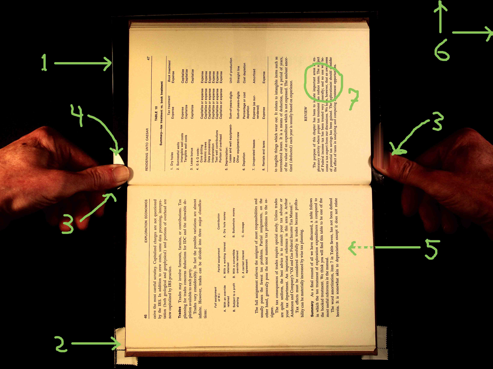
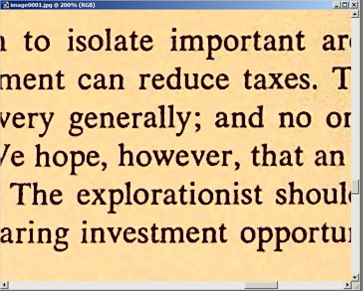
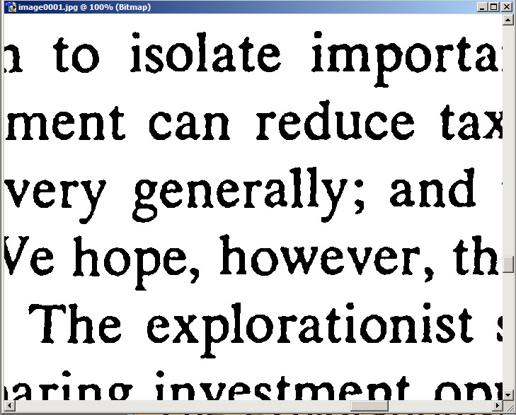
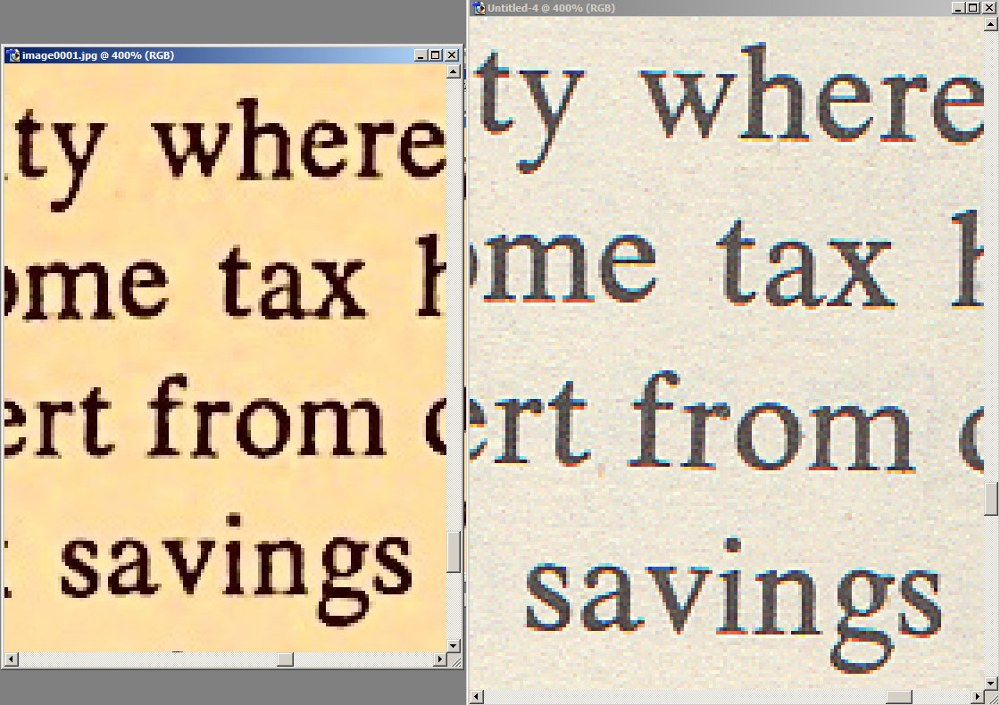
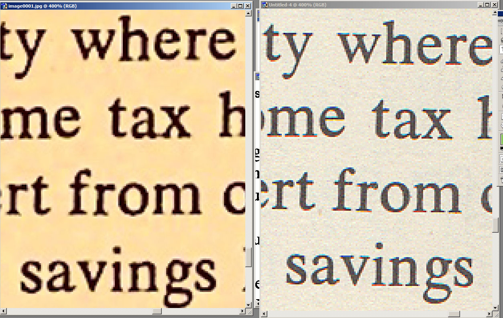
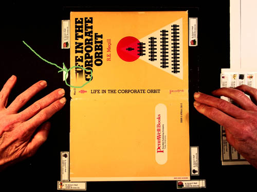

Norman Megill
Copyright terms: Public domain
Contents of this page:
External pages:
I received my Czur scanner about 2 weeks ago. After several evenings of frustration with poor results trying to scan books, I was about to give up and go back to my reliable but painfully slow flatbed scanner. Maybe I have been spoiled by the professional-level high quality of flatbed scanners, but I wanted to achieve the same results with the Czur scanner.
The hardware of the Czur scanner is quite nice. But I have concluded that the software just isn't ready for prime time. I could see it taking 6 months to a year or more to be perfected, and I don't want to wait that long.
The Books mode tries to flatten the text on curved pages by pointing a laser beam at an angle to obtain a curved line corresponding to the page curve. But unless the book is opened in a very particular way, you can end up with somewhat wavy lines of text, which is readable but not very pleasant or professional-looking. Also, getting it to recognize the edges of the book, especially with your hands holding it open, is tenuous and sometimes requires multiple attempts per page (making it slower than a flatbed scanner once you add up all time spent carefully examining each page to delete and rescan the bad ones and doing manual renames to get everything back into sorted order again). Even when everything works more or less as intended, flattened text near the steeply sloped middle of facing pages can be slightly blurry because of the severe transformation that it undergoes, which may be a problem if the font is very small.
Fortunately, I have come up with at method that is quite satisfactory for people like me who are used to flatbed scanners and have their own workflow set up to process the images, i.e. to perform the steps of trimming pages, converting to black and white, and doing OCR. I use (the very old) Photoshop 7 for the image processing. There are also free open-source alternatives such as GIMP that will work.
What I'm about to describe is how to trick the Czur into emulating a "dumb" flatbed scanner, but with much faster scans than a typical flatbed scanner. This method is intended for black-and-white text. For images requiring color, it will work, but the colors may not be uniform depending on the lighting.
Warning! A physical drawback of this method is the same as with a flatbed scanner, which is that the book has to be pressed flat to obtain a good result. This will stress or break the binding on some books and certainly doesn't leave the book in a pristine "like new" condition. It is best used on books you intend to discard after scanning or don't mind if they may be damaged.
Because I already have a process set up for my flatbed scanner, basically all I need from the scanner is just an unprocessed, plain image without "rectifying", "beautifying", "purifying", or any of the other "smart" processing options applied. It appears that none of this can be turned off in the software. I would recommend to Czur that future software have a configuration menu that allows features to turned off and on selectively (and maybe also explain in the manual what they mean).
However, I discovered a trick. In Books mode (but not in Single mode), if you cover up the lasers with a piece of duck tape, it seems that it will revert to a "dumb" mode that simply produces the full 4608 x 3456 camera image with little or no processing.
You will need the following items to perform what I will describe:
I have attached 3 images showing the overall process, which I will describe.
To get into the correct mode on the Czur scanner, perform the following steps.
Make sure the laser is covered up. Turn the LED lighting off with the silver button on the bottom of the scanner. You need external lighting instead.
Fig. 1 is a 4608 x 3456 image I captured this way. I have marked it up with annotations to explain what I did.
|  |
| Figure 1. Scanner setup. (Right-click then View Image to see full resolution.) |
Fig. 1-(1): You can see the edges of the plexiglass sheet placed over the book. If the book is small like this one, it is easiest to scan it sideways like this.
Fig. 1-(2): I placed stickers marking where the book should be positioned. It is important to get the positioning consistent since that will allow automated batch trimming later based on absolute image coordinates.
Fig. 1-(3): Press down in or near the middle of the facing pages so the pages end up flush against the plexiglass. Pay particular attention to the center of the book, which may require some pressure to get as flat as possible. You may have to fold the book back a little to get the binding to open better.
Warning: This may damage the book's binding! To reduce possible damage, follow the rules you may have learned in grade school for breaking in a new textbook. This consists of opening several pages partially throughout the book, then repeating the process to open them more and more, so the spine follows a gentle rounded curve rather than having a sudden severe, ugly bend at one spot. If the book is very old with hardened, brittle glue holding it together, accept the fact that you will probably break the binding and will need to repair or discard it. Do not scan with this method if that is not acceptable!
For a larger book that must be positioned left to right, it might be easier to work from the side of the scanner to prevent your arms from blocking the image. I don't have experience with a large book yet.
Fig. 1-(4): The LEDs must be turned off, and the external lamps must be positioned so they don't reflect off of the plexiglass. Here you can see the left lamp's partial reflection, but as long as it is not over the book it is fine. Try to get the illumination as uniform as you can, although it's not necessary for it to be perfect.
Fig. 1-(5): When scanning the first and last few pages of the book, one side will be thinner (have fewer pages) than the other, making it hard to press flat. I solved this by placing a couple of crumpled tisses (or soft foam) under the front cover to help push the thin side against the plexiglass.
Fig. 1-(6): To make sure that you have the right mode enabled as above, check that the image size is exactly 4608 by 3456 pixels. If it is different, either the lasers weren't blocked or you selected single page mode instead of book mode.
Fig. 1-(7): I've circled a portion of the smaller text on the page that appears in Fig. 2 and Fig. 3.
Fig. 2 shows a blowup of this circled portion.
|  |
| Figure 2.Portion of Fig. 1. (Right-click then View Image to see full resolution.) |
Fig. 3 shows the final 600 ppi (pixels per inch) bitmap after post-processing. Bitmaps will result in a much smaller file size than a full color image, and OCR accuracy is often better as well. It is still very legible and looks reasonably clean.
|  |
| Figure 3.Final bitmap for Fig. 2. (Right-click then View Image to see full resolution.) |
Suggestions for post-processing
Here I will give an overview of how I post-processed the image to achieve the bitmap of Fig. 3. Your process may vary depending on your software. Of course you want to exploit any batch processing features of your software such as scripting (called "actions" in Photoshop) in order to achieve the most efficient workflow. I won't get into those details here.
After scanning your pages, the Czur images will be stored under "C:\Program Files (x86)\Czur scanner\sources\2016_mm_dd_hh_mm_ss\" (where mm is the month, etc.) as files image0001.jpg, image0002.jpg, etc. This directory requires administrator privileges, so to work with the files you may need to copy this folder to a folder under your C:\User account.
To achieve the result of Fig. 3, I performed the following processing steps starting from Fig. 2 (the original scan).
1. For some reason the Czur image resolution is set to 72 ppi. I measured the actual scanner resolution to be about 250 ppi (it varies with vertical distance i.e. thickness book; see below). So first I corrected this (without resampling the image). In Photoshop 7 this is done by selecting Image -> Image Size and changing the Resolution from 72 to 250 ppi with resampling turned off.
2. Because of the uneven illumination of the page, threshold detection at this point won't work well directly. I passed the image through Photoshop's high pass filter, under Filter -> Other -> High Pass with Radius set to 60 pixels. Basically you want to get the background to be more or less uniform.
3. To obtain a good bitmap that isn't too jagged, we need to increase the resolution. I did this by selecting Image -> Image Size and changing the Resolution from 250 ppi to 600 ppi with bicubic resampling. Actually, 300 ppi is probably adequate for most books without small fonts, and it will result in a smaller final PDF. (Update, June 5, 2016: I have been resampling to 400 ppi for the several most recent books I scanned, and it seems to be a good compromise.)
4. Now it is a matter of converting to black and white. The method for Photoshop is described in the next section, and the result is Fig. 3.
(Added June 5, 2016)
I was asked about the process I used with Photoshop. I never upgraded from PS7 since it does what I need. The commands in other versions of PS or alternatives may be different, but my experience may serve as a guide.
You can find Photoshop 7 tutorials online, and I will assume you know how to create Actions (scripts) for trimming the image and extracting the left and right of facing pages. Always save the JPG with the highest quality at intermediate steps. Tip: when running the Action (via File -> Automate -> Batch) to extract the right-hand page, under File Naming use Document Name + extension + extension. If the left-hand page is named image0055.jpg, then the right-hand page will be named image0055jpg.jpg and thus will sort immediately after the left-hand page for later page assembly with a PDF creator.
I will assume you've succeeded in making a directory with the JPG images of the left and right book pages.
The critical step is converting color to bitmap, and I'll give the exact steps I used. After a number of experiments, I've determined that resampling to 400 ppi seems to be a good compromise between file size and bitmap quality. I created an Action (script) that recorded the following steps:
The settings in these steps work well over a wide range of page illumination and is relatively insensitive to non-uniformities in the illumination.
This procedure is intended to convert text to black and white letters for both smaller file size and for better OCR performance. Photos and other images with color and gray will be damaged by this conversion, and you need to separate out such pages.
Czur scanner quality vs. flatbed scanner quality
(Added June 3, 2016)
For most of my past scans I've used a flatbed scanner at 300 ppi, which has been more than enough for essentially all books and documents that I've ever scanned. Some perfectionists use 600 ppi to obtain a professional, publication-quality scan, but for home use that is overkill, and I don't like the greater file size. Even the tiniest math subscripts have been clearly legible at 300 ppi.
I made a full-color scan of the page above at 300 ppi on an Epson NX420. Fig. 4 shows a side-by-side view of the Czur and the Epson, greatly magnified so they can be compared at the pixel level. The Czur scan is smaller since its resolution is about 250 ppi. (The flatbed scan is slightly tilted but should give the idea. I didn't feel like doing it over again.)
|  |
| Figure 4.Czur vs. flatbed scanner. (Right-click then View Image to see full resolution.) |
In Fig. 5, I did a bicubic resampling of the Czur to 300 ppi for an easier comparison.
|  |
| Figure 5.Czur (resampled to 300 ppi) vs. flatbed scanner. (Right-click then View Image to see full resolution.) |
The Czur isn't as crisp as the Epson, so this is a tradeoff that you should be aware of. I think the Czur will be fine for most books. For a math text with tiny subscripts, you probably want to check the legibility with the Czur and perhaps revert to a flatbed scanner for problematic pages.
Resolution of the scanned image
(Added June 4, 2016)
I measured the pixels per inch by scanning a ruler, and it varies with vertical distance (z-direction), i.e. thickness of the book, as one would expect. It was 242.8 ppi with the ruler placed directly on top of the black mat, 253.9 ppi on top of a book with 0.62-inch thickness, and 266.0 ppi on top of a book with 1.20-inch thickness. Thus starting from 242.8 ppi at the mat, the resolution increases an average of about 18.8 ppi for every vertical (z-direction) inch. I am now using 250 ppi as a typical value for post-processing software.
Note that this is not the actual resolution of the scanner, since the camera does not focus down the the pixel level (see Fig. 4 above). Someone else who is knowledgeable about these things may want to measure the true resolution, for example with a test sheet of lines that get closer and closer together until they can no longer be distinguished.
Further comments and suggestions
(Added June 4, 2016)
1. In Fig. 1 above, notice that there is a vertical smear on tip of my right thumb. At first I thought I had moved my thumb during the scan, but actually it is an artifact of the scanner, because I have seen similar vertical smears at other times even when my hands are nowhere near the scanner. Thankfully it hasn't happened on top of the book page and is usually on the dark side of an edge, but it may be a problem when scanning pages with photographs. It seems that the "dumb" scan mode I'm trying to trick the scanner into is doing some kind of unwanted processing anyway, Again, I wish Czur would provide a feature to turn off ALL image processing and just let us use the hardware!
2. After scanning and post-processing several books, here are some things I found helpful.
(Added June 12, 2016)
|  |
| Figure 6. Deletion of "L" and smearing of "I" in the word "LIFE". (Low resolution version of the Czur scanner's 4608 x 3456 image.) |
In the scan of this book cover, the word "LIFE" in the book's title has a missing "L" and a smeared "I"! I had hoped that I had disabled all "smart" processing by covering the laser in Books mode to achieve the full 4608 x 3456 camera image, but I assumed wrong. This happens intermittently, and the algorithm it uses is bizarre and unreliable. Maybe it thought the "L" in the title was a fingertip and deleted it?
I discovered this long after I thought my scan was finished. Fortunately I still had the book and was able to make another scan without this artifact, which sometimes happens and sometimes doesn't.
This is unacceptable. It means that I have to carefully inspect every scan for such surprises, greatly slowing down the scanning process. Because the software cleverly restores the background color, it can sometimes be subtle and hard to detect except by careful comparison to the original. Even in this case, if it weren't for the misspelling, one might think it was just an artistic effect to convey fast-paced corporate life. :)
A lot of us have used flatbed scanners for many years and have our own post-processing methods that we are happy with. All we need is a method for getting the images into the computer. The big advantage of Czur for us is the high speed of the hardware, and that alone is worth the money I paid. But if we can't get the images into the computer in a reliable way, the high speed is worthless.
We desperately need a checkbox or third option to "Single"/"Books" called "Unprocessed" or "Raw" on the Czur software that turns off all "smart" processing and provides us with the 4608 x 3456 unprocessed image that you see on the computer screen. (If Czur is reading this, by "Raw" I don't mean the photographic RAW file of the camera but just the image like in Fig. 6 above without any smart processing artifacts like the missing L. "Unprocessed" might be a better name.) I think this would be relatively simple for Czur to do, since it is just just disabling or bypassing those processing steps in their software. That would make me and I think a lot of other users much happier.
The image produced by the Czur scanner is about 250 ppi. The actual resolution may be somewhat less since the camera focusing is not perfect down to the pixel level. But as the samples above show, it should be more than adequate for a typical book.
The big advantage for home use is that it is MUCH faster than a typical home-use flatbed scanner. While the resolution tradeoff is one thing to consider, the higher speed is a very attractive feature that makes it worthwhile. In my case, I think that I will be using the Czur to scan all but the most demanding books.
User comment
Heiko Rath writes (2-Jun-2016):
Thank you for sharing your scanning process. One thing I noticed while trying to work around limitations of the Czur scanner software is that new/unmodified images are initially stored in the following folder:
C:\Users\<user name>\AppData\Local\Temp\sources
and deleted when you close the program/switch to another folder.
As you mentioned post-processing capabilities in the application are pretty limited. I've gotten better results when I copy the source scans from C:\Users\<User>\AppData\Local\Temp\sources and then perform post-processing with Scan Tailor to rotate/split pages/select content/remove extraneous borders/normalize exposure & resize all pages to exact same size. Then I've used IrfanView to rename all files as image00xxx and run the embedded Abbyy FineReader OCR over it to turn things into a PDF with searchable text. This generates pretty good output, but there is one thing that slightly bothers me. Abbyy FineReader apparently analyzes the images and decides to also slightly rotate/resize resulting in some pages that are just a little tilted/different sizes. If there were an option to tell Abbyy Finereader not to rotate/resize it should be made user selectable. I am starting to experiment with Tesseract on a Linux box to see if I can get improved results.
| This
page was last updated on 2-Jun-2016. Norman Megill Copyright terms: Public domain |
W3C HTML validation [external] |